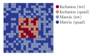

Package design
At the top level, the user of FerriteAssembly needs to interact with two main types of objects, a domain buffer (or a Dict of multiple domain buffers) and a worker (for example an assembler).
Worker
The worker is the simplest object, and determines what is done for each item in the domain(s).
Domain buffer
Two domain buffer types are implemented, a regular and a threaded version. To understand the structure, it sufficies to to understand the regular buffer. The threaded version just contains additional values to have per-task buffers etc. The key fields of the DomainBuffer type are (1) a set of items to iterate over (for example a vector of Int for a list of cells or a vector of FacetIndex for a list of facets) and an itembuffer (e.g., CellBuffer or FacetBuffer) containing the data required to do something for each entity.
ItemBuffer
The most important fields in an item buffer are the user-defined material and the FEValues (e.g. CellValues or FacetValues).
Requirements for being a domain
In addition to having the same FEValues and material, the items in a domain must also share the same SubDofHandler. However, multiple domains can share the same SubDofHandler.
Setting up one domain
Each domain is described by a DomainSpec. Based on a DomainSpec, we call the function setup_domainbuffer to create a DomainBuffer. The motivation for this two-stage process, is to separate the information given and to simplify setting up multiple domains. Depending on the options given to setup_domainbuffer, different buffers can be returned, such as ThreadedDomainBuffer or a domain buffer with a special AutoDiffCellBuffer to speed up automatic differentiation.
Multiple domains
Figure 1 shows an example of a mesh, containing both Quadrilateral and Triangle elements, as well as two different materials, which we call "matrix" and "conclusion". In this case, we could have two SubDofHandlers, one for triangles and one for quadrilateral. If we would like to assemble the cell contribution for this grid, we need four different domains, shown by the different colors in the figure. This is because the the CellBuffer would contain different material types for each domain, and we would require different CellValues for the triangles and quadrilaterals.

Figure 1: Domains
When setting up the domains, we collect all domains into a Dict, which is done by calling setup_domainbuffers(::Dict{String,DomainSpec}; kwargs...), where the keyword arguments are the same as for a single domainbuffer.
User-defined overloaded functions
The user interacts with FerriteAssembly on the top level, when setting up the domain buffer and the worker. But to make it work, the user must also overload several functions that happen at the innermost part of the iteration of items in the grid. Some key functions to be overloaded are
element_routine!: CalculateKe,re, andstateelement_residual!: Calculatere, andstatecreate_cell_state: For the given material and initial cell dof values, return the initial value of the cell state. Typically one value per integration point.allocate_cell_cache: Define workspace for calculation on a single cellallocate_facet_cache: Same as above, but for a facet
State variables
State variables (both current and old) are stored as a Dict{Int} in the domain buffer (for cells, not for facets, this may be added in the future). The key corresponds to the cell id, and the state can be gotten with the get_state and get_old_state functions.
User-data
All item buffers contain a user_data field for passing any additional information to the item being worked. In most cases, this should not be necessary, but it provides an easy way to do something that is not normally supported. The object is passed around as reference; care must thus be taken to avoid race conditions if written to during threaded work.